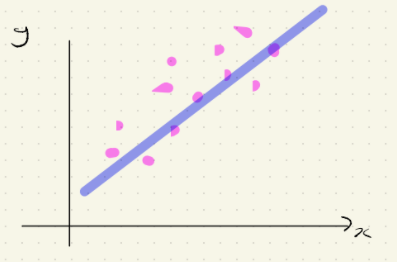
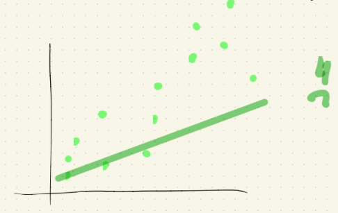

Modelos lineales
Es una técnica supervisada. La respuesta será \(y\) mientras que las variables explicativas, predictivas o covariables se denotarán por \(x_1, x_2, ..., x_p\). La familia de los modelos lineales es muy versátil.
Regresión clásica
\[ y = \beta_0 + \beta_1 x_1 + ... + \beta_p x_p \]
Hay una relación lineal entre \(y\) y \(x_1, x_2, ..., x_p\)
Modelos lineales generalizados
\[ g(y) = \beta_0 + \beta_1 x_1 + ... + \beta_p x_p \]
Donde \(g\) es una función.
Ejemplos por excelencia de este tipo de rtegresión:
Regresión logística.
Regresión Poisson.
Modelos generalizados aditivos (GAM’s)
\[ y = \beta_0 + \beta_1 g(x_1) +\beta_2 g(x_2) + ... + \beta_p g(x_p) \]
En general nos interesan al menos 5 cosas (independientemente del modelo lineal a trabajar).
¿Cómo se estiman las \(\beta ' ^s\)?
¿Algunas propiedades que tienen los estimadores \(\hat{\beta}'^s\)?
Insesgado
Varianza
Intervalo de confianza
Predicción \(\hat{y}_i\)
Bondad de ajuste, es decir ¿\(y_i \approx \hat{y_i}\)?
¿Cuáles de entre \(x_1, ..., x_p\) son importantes para determinar la relación con \(y\)? Selección de variables o feature engineering.
Regresión Lineal Simple
Suposiciones del modelo
El modelo SLR (Simple Linear Regression) se basa en algunas suposiciones:
\[ y_i = \beta_0 + \beta_1x_i + \epsilon_i,\\ i = 1,...,n\text{ es decir, el número de observaciones es }n \]
\(y_i'^s\) son realizaciones de variables aleatorias. Los valores \(x_i\) son no-aleatorios.
Las cantidades \(\epsilon_1, ..., \epsilon_n\) representan errores aleatorios que son independientes entre sí y además:
\(\mathbb{E}(\epsilon_i) = 0, i = 1,...,n\)
\(Var(\epsilon_i) = \sigma^2\) Conocida como Hipótesis de homocedasticidad.
Bajo estos supuestos se tiene que
\(\mathbb{E}(y_i) = \beta_0 + \beta_1x_i\)
\(Var(y_i) = Var(\beta_0 + \beta_1x_i + \epsilon_i) = Var(\epsilon_i) = \sigma^2\)
Cosas que ya deberíamos saber:
Estimación de \(\beta_0\) y \(\beta_1\) por mínimos cuadrados.
\[ SS(\beta_0, \beta_1) := \sum_{i=1}^n[\underbrace{y_i}_{\text{observado}} - \underbrace{(\beta_0 + \beta_1x_i)}_{\text{Supuesto}}]^2 \]
- Se seleccionan \(\beta_0, \beta_1\) de tal forma que se minimice \(SS(\beta_0, \beta_1)\) (lo cual es un problema clásico de optimización).
\[ \hat{\beta}_1 = \frac{\displaystyle \sum_{i=1}^n(x_i - \bar{x})(y_i - \bar{y})}{\displaystyle \sum_{i=1}^n(x_i - \bar{x})^2} = \frac{S_{xy}}{S_{xx}} \]
\[ \hat{\beta}_0 = \bar{y} - \hat{\beta_1}\bar{x} \]
donde
\[ S_{xy} = \displaystyle \sum_{i=1}^n(x_i - \bar{x})(y_i - \bar{y}) = \displaystyle \sum_{i=1}^n x_iy_i - n\bar{x}\bar{y}\\ S_{xx} = \displaystyle \sum_{i=1}^n(x_i - \bar{x})^2 = \displaystyle \sum_{i=1}^n x_i^2 - n\bar{x}^2 \]
Una propiedad interesante de estos estimadores es la siguiente
\[ \hat{\beta}_1 = r_{xy}\frac{S_y}{S_x} \]
donde
\[ S_y := \displaystyle \sqrt{\frac{1}{n-1} \sum_{i=1}^{n}(y_i-\bar{y})^2 }\\ S_x := \displaystyle \sqrt{\frac{1}{n-1} \sum_{i=1}^{n}(x_i-\bar{x})^2 }\\ \text{Coeficiente de correlación muestral entre }x \text{ y } y:\\ r_{xy} = \frac{S_{xy}}{\sqrt{S_{xx} S_{yy}}} \]
Este resultado “justifica” el caso de la correlación como medida de asociación lineal y el dibujo que nos encanta ❤️

Ya con estos \(\hat{\beta}_0\) y \(\hat{\beta}_1\) en la mano, podemos definir \(\hat{y}_i = \hat{\beta}_0 + \hat{\beta}_1 x_i\) como el ajustado y también los residuales como
\[ \hat{\epsilon}_i = e_i := y_i - \hat{y}_i \]
Importante
\[ \text{Residuales} \neq \text{Errores aleatorio}\\ \underbrace{e_i}_{\text{Calculables, reales}} \space \space \space \space \space \space\space\space\space \underbrace{\epsilon_i}_{\text{Variables aleatorias}\\\text{no observables}} \]
En los cursos se demuestra que
\(\displaystyle \sum_{i=1}^n e_i = 0\)
\(\displaystyle \sum_{i=1}^n x_ie_i = 0\)
Para hacer inferencia, tenemos que hacer algunas suposiciones, la más común es \(\epsilon_i \sim N(0, \sigma^2)\) y además que \(\epsilon_1, \epsilon_2, ..., \epsilon_n\) son i.i.d’s.
Esta suposición nos lleva a que
\[ y_i \sim N(\beta_0 + \beta_1x_i, \sigma^2) \]que es algo fuerte de suponer.
Tenemos que “evaluar” qué tan bueno es el modelo, es decir, si incorporar a la variable \(x\) para explicar \(y\) es valioso. Entonces
\[ \underbrace{\displaystyle \sum_{i=1}^n (y_i - \hat{y}_i)^2}_{\text{Modelo de}\\ \text{regresión}} < \underbrace{\displaystyle \sum_{i=1}^n (y_i - \bar{y}_i)^2}_{\text{Modelo naive}\\ \text{iid}} \]
Una descomposición popular es:
\[ y_i - \bar{y} = y_i - \hat{y}_i + \hat{y}_i - \bar{y} \\ \]
\[ \Rightarrow \text{ (Se demuestra)} \\ \]
\[ \underbrace{ \displaystyle \sum_{i=1}^n (y_i - \bar{y})^2}_{\text{TSS}} = \underbrace{ \displaystyle \sum_{i=1}^n (y_i - \hat{y}_i)^2}_{\text{RSS ó}\\ \text{Error S}} + \underbrace{ \displaystyle \sum_{i=1}^n (\hat{y}_i - \bar{y})^2}_{\text{Reg SS}} \]
TSS: Total SS
\(\displaystyle \sum_{i=1}^n (y_i - \bar{y})^2 = (n-1) S_y^2\)
Variación de la respuesta con respecto a su media muestral \(\bar{y}\)
Cantidad de variabilidad inherte en las respuestas antes de realizar la regresión.
Residual SS ó Error SS
\[ RSS = \displaystyle \sum_{i=1}^n (y_i - \hat{y})^2 \]
Variación de la respuesta con respecto a la rexta de regresión
Mide la bondad de ajuste de LSR. Mientras más bajo, mejor \(\downarrow\) üòÑ
Mide la cantidad de variabilidad de la respuesta que no es explicada aún despu+es de introducir \(x\)
RegSS: Regression SS
\(RegSS = \displaystyle \sum_{i=1}^n(\hat{y}_i - \bar{y})^2\)
Variación explicada por el modelo SLR i.e. el conocimiento de \(x\) v.s. el deconocimiento de \(x\).
Mide qué tan efectivo es el modelo SLR en explicar la variación en \(y\). (Incorporar \(x\) v.s. no incorporar \(x\)).
Trivialmente \(RSS < TSS\)
Como \(TSS\) permanece fijo, mientras más grande sea \(RegSS\), más pequeño será \(RSS\)
\[ RegSS \text{ grande & } RSS \text{ pequeño } \rightarrow \text{ fue buena idea introducir }x \]
Lo anterior motiva la definición de \(R^2\) a.k.a. coeficiente de determinación
\[ R^2 := \frac{RegSS}{TSS} = 1- \frac{RSS}{TSS} \]
Se requiere que \(R^2\) sea lo más cercano posible a 1.
Mientras más grande sea el valor de \(R^2\), más efectiva será la recta de regresión en reducir la varianza de \(y\).
En SLR hay relaciones entre \(\hat{\beta}_1\) y \(RSS\)
\(RegSS = \hat{\beta}_1^2 S_{xx}\)
\(RSS = S_{yy} - \hat{\beta}_1^2S_{xx}\)
Como \(S_{xx}\) no cambia, entonces si \(\hat{\beta}_1\) es grande, sucede que \(RegSS\) es grande y por tanto fue buena idea introducir \(x\).
También se puede demostrar que en SLR
\[ R^2 = \underbrace{r_{xy}^2}_{\text{Cuadrado del}\\ \text{coeficiente de}\\ \text{Correlación} \\ \text{muestral}} = \bigg(\frac{S_{xx}}{\sqrt{S_{xx}\cdot S_{yy}}}\bigg)^2 \]
Otra cantidad popular en el análisis de regresión es
\[ \boxed{MSE := \frac{RSS}{n-2} = \frac{\displaystyle \sum_{i=1}^ne_i^2}{n-2} =: S^2} \]
Además \(S^2\) es un estimador insesgado de \(\sigma^2\), es decir \(\mathbb{E}(S^2) = \sigma^2\)
Para probar formalmente si \(RegSS = \displaystyle \sum_{i = 1} ^n ( \hat{y}_i - \bar{y})^2\) es suficientemente grande, se lleva a cabo
La prueba F
\[ \underbrace{H_0: \beta_1 = 0}_{\text{agregar } x \text{ no} \\ \text{redujo la variabilidad} \\ \text{de }y} \space \space \space \space \space \space \space H_a: \beta_1 \neq 0 \]
Estadística de prueba \(F := \frac{RegSS/1}{Rss/(n-2)}\)
Sea \(F_{1, n-2, \alpha} \in \mathbb{R}\) tal que \(\mathbb{P}(F_{1,n-2}> \underbrace{F_{1, n-2, \alpha}}_{\text{upper cuantil}}) = \alpha\)
Regla de decisión
Si \(\underbrace{F}_{\text{estadística}\\ \text{de prueba}} > F_{1, n-2, \alpha}\) entonces se rechaza \(H_0\)
O bien a través del \(p-value\)
\[ \text{Si } \mathbb{P}(F_{1,n-2} > F) < \alpha, \text{ entonces se rechaza } H_0 \]
- Mientras más pequeño sea el \(p-value\), se tendrá evidencia más fuerte para rechazar \(H_0\)
Una relación “bonita” entre \(F\) y \(R\) (en SLR)
\[ F = \frac{RegSS/1}{Rss/(n-2)} = (n-2)\frac{R^2}{1-R^2} = (n-2)\frac{r_{xy}^2}{1-r_{xy}^2}\\ \text{Obs: la aplicación } R^2 \mapsto F = (n-2)\frac{R^2}{1-R^2} \text{ es creciente.} \]
Propiedades de \(\hat{\beta_0}\) y \(\hat{\beta_1}\)
Si \(\epsilon \sim N(0, \sigma^2)\), entonces \(\hat{\beta_0}\) y \(\hat{\beta_1}\) tienen también distribución Gaussiana:
\[ \mathbb{E}(\hat{\beta_0}) = \beta_0\\ \mathbb{E}(\hat{\beta_1}) = \beta_1\\ \text{Es decir que son estimadortes insesgados}\\ Var(\hat{\beta_0}) = \sigma^2 \bigg(\frac{1}{n} + \frac{\bar{x}^2}{S_{xx}}\bigg) \\ Var(\hat{\beta_1}) = \frac{\sigma^2}{S_{xx}}\\ Cov(\hat{\beta_0}, \hat{\beta_1}) = \frac{-\bar{x}\sigma^2}{S_{xx}} \]
Las desviaciones estándar estimadas de \(\hat{\beta_0}\) y \(\hat{\beta_1}\) se denotan como \(SE(\hat{\beta_0})\) y \(SE(\hat{\beta_1})\), respectivamente y se conocen como errores estándar.
Son medidas de la confiabilidad ó precaución de los LSE´s
De donde
\[ SE(\hat{\beta_0}) = \sqrt{S^2 \bigg(\frac{1}{n} + \frac{\bar{x}^2}{S_{xx}}\bigg)} \\ SE(\hat{\beta_1}) = \sqrt{\frac{S^2}{S_{xx}}} \]
\(S^2 \mapsto SE(\hat{\beta}_0^2)\) es creciente.
\(S^2 \mapsto SE(\hat{\beta}_1^2)\) es creciente.
\(S_{xx} \mapsto SE(\hat{\beta}_0^2)\) es decreciente.
\(S_{xx} \mapsto SE(\hat{\beta}_1^2)\) es decreciente.
Recordemos que \(S_{xx} = \displaystyle \sum_{i=1}^n(x_i-\bar{x})^2\)
Lo anterior graficamente se puede ver así

Los errores estándar serán pequeños si las observaciones muestran gran tendencia a estar cerca de la recta de regresión y si los valores observados de la variable explicativa (i.e. \(x\)) están más “dispersos” a lo largo del eje \(x\) (es decir, \(S_{xx}\) grande).
Puede suceder que exista más dispersión pero eso no es garantía de un “buen ajuste”.

Intervalos de confianza para \(\beta_j\)
A partir de los errores estándar ya definidos, se puede demostrar que los intervalos del \((1-\alpha)\%\) de confianza para \(\beta_j\) es:
\[ \hat{\beta}_j \pm \underbrace{t_{n-2, \frac{\alpha}{2}}}_{\text{upper cuantil}\\ \text{al nivel } \frac{\alpha}{2} \text{ de una} \\ \text{distribución } t_{(n-2)}} \cdot SE(\hat{\beta}_j), \space \space \space \space \space i = 0,1 \]
En general se pueden plantear hipótesis de la siguiente manera:
- \(H_0: \beta_j = d\) v.s. \(H_1: \beta_j \neq d\)
- \(H_0: \beta_j = d\) v.s. \(H_1: \beta_j > d\)
- \(H_0: \beta_j = d\) v.s. \(H_1: \beta_j < d\)
Donde \(d \in \mathbb{R}\) especificado por el usuario.
Para este tipo de contraste usábamos la prueba \(t\).
\[ t(\hat{\beta}_j) = \frac{\hat{\beta}_j - d}{SE(\hat{\beta}_j)}, \space \space \space \space \space \space j = 0,1 \]